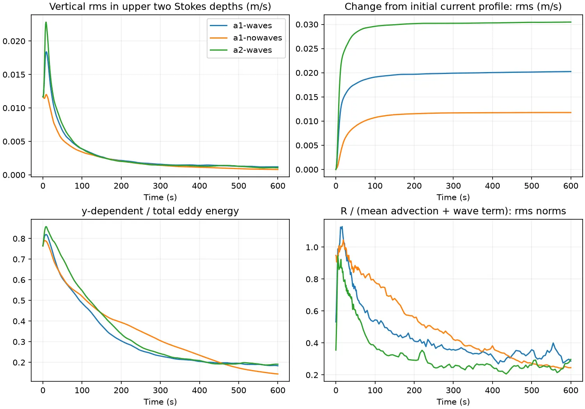
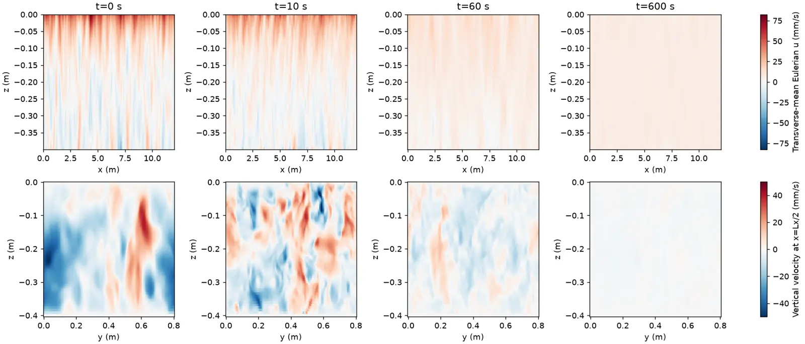
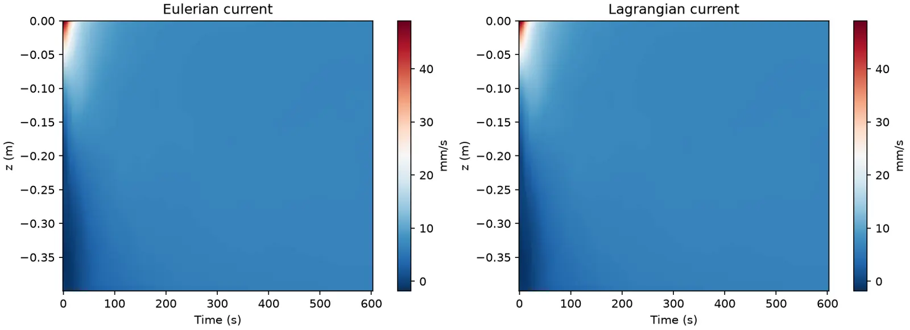
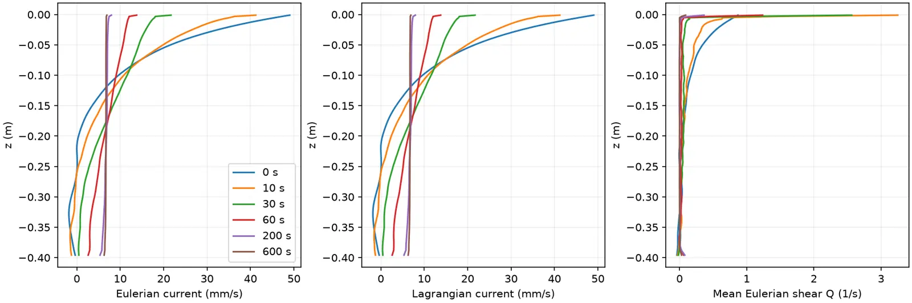

1/4 runs completed. Two initial Eulerian shears, α = 1 and 2, each with steady waves and a matched wave-free control. Original 12 × 0.8 × 0.4 m periodic tank; 1536 × 128 × 128 grid; 600 s; one turbulent realization. No sustained wind or imposed two-dimensionalization.
The initial smooth shear is already a current. A later mean profile or small 3D energy fraction alone does not demonstrate newly formed jets. We test whether persistent new current extrema arise after the Langmuir phase, while following the evolving Eulerian shear and complete transverse Reynolds-stress curl.
The wave and wave-free runs share the turbulent initial condition and prescribed Eulerian shear. The upstream transport convention adds a depth-uniform offset to the wave case, so profile changes and shear are more useful comparisons than absolute velocity offsets.
R uses continuum derivatives of centered transverse moments. Temporal sampling, interpolation and implicit numerical dissipation contribute to its budget residual; this is not an exact native tendency split or a convergence demonstration.
Time step (amendment, 3 November 2026): wave runs use Δt = 0.005 s and wave-free controls 0.01 s. The first α = 1 wave run at 0.01 s stopped at the campaign's CFL 0.9 guard near t = 5 s as Langmuir cells spun up, and both α = 2 runs failed before integrating on one GPU node. Those attempts are preserved but not published; wave/control pairs at different time steps rely on the passed half-time-step check.
Protocol · Status and summary · Source provenance

queued or not yet started



queued or not yet started
queued or not yet started